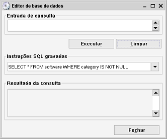

Editor de base de dados
Caminho de menu: Ferramentas > Editor de base de dados

O Editor de base de dados oferece uma forma fácil e rápida de manipular dados diretamente na base de dados. Ignora todas
as verificações de dados, portanto deve ser usado com cuidado.
Se não está familiarizado com SQL, não deve usar o Editor de bases de dados, uma vez que pode fazer alterações
não desejadas.
Criar e executar uma instrução SQL
Introduza uma instrução SQL no campo Entrada de consulta e clique em Executar. Serão mostrados erros
se a consulta estiver incorreta (estas mensagens não são geradas pelo Data Crow, mas sim pelo motor da base de dados).
Instruções executadas anteriormente podem ser encontradas na lista pendente "Instruções SQL gravadas".
O resultado da procura é mostrado na tabela "Resultado da consulta".